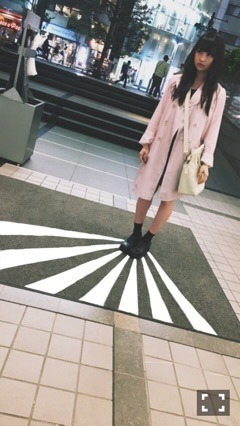

| 2016/05 02 Mon | 腹時計。711回目 |
名古屋2日間ありがとうございました！
全握はちーちゃんとペアでした〜
前回の幕張で会話を交わしたばっかり
だったから嬉しいタイミングだった（＾∇＾）
ちーちゃんへの人の目の付け所が独特で、
いつも面白いんだ〜
来てくださったみなさん
ありがとうございました！
個別握手会
robe de chambre COMME des GARCONS

ジャージで失礼しました！！
普段着として着られる、青、かわいい
乃木恋と就活についての話が多かった。
面接参考になりました！
と冗談でも言ってくれて嬉しかったです、、
あと、お酒ね！
なにが好きとか特にないけど
徐々に飲めるようになってきましたよ〜
来週は京都で2日間、
よろしくお願いしますヽ(ﾟ､｡)ﾉ
れもんらいふ展"5"
かわいいと変と新しいを混ぜると、
れもんになる。
フラッシュで目が開く、
新しくて面白い空間だった。
written、LAMINATION、れもんらいふ、、
気づいたら表参道ROCKET
皆勤賞だったみたいです。

自分の軸がブレなければ
様々な道を歩いて
見て聞いて考えることは
きっと実になる。な
ヽ(ﾟ､｡)ﾉ
まりか
コメント(417)
2016/05/02 20:18